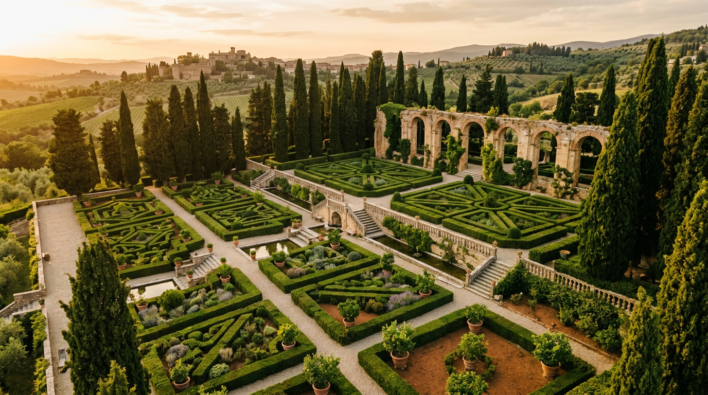

Villa Barberini — il giardino delle terrazze.

Sotto le terrazze fiorite di Villa Barberini scorre un doppio strato di storia: un principe romano del Seicento e un imperatore del primo secolo. Taddeo Barberini costruì la sua villa sulle rovine dell'Albanum Domitiani, e da quell'incastro nacque il capolavoro dei giardini pontifici.
L'Albanum Domitiani, sotto le siepi
Prima dei papi e prima dei Barberini, questa collina apparteneva a Domiziano. Fra l'81 e il 96 d.C. l'imperatore vi fece costruire una villa imperiale immensa, l'Albanum Domitiani, che si estendeva per circa 14 chilometri quadrati, dall'Appia fino a comprendere il Lago Albano ([Vatican State — Castel Gandolfo](https://www.vaticanstate.va/en/other-bodies/castel-gandolfo.html)). Comprendeva teatro privato, ninfei, criptoportici, terrazze affacciate sul lago, acquedotti. Chi oggi visita i Giardini Barberini cammina sulla terrazza centrale della residenza imperiale.
Del criptoportico originario di 300 metri, che fungeva da giardino d'inverno per l'imperatore, se ne conservano oggi circa 120 metri, ancora ispezionabili ([Omnes — Borgo Laudato Si'](https://www.omnesmag.com/it/notizie/borgo-laudato-si-la-residenza-estiva-del-papa-e-il-sogno-di-prendersi-cura-del-creato/)). I resti del teatro imperiale, i muraglioni delle terrazze e alcune strutture minori affiorano fra le siepi.
Taddeo Barberini, 1631
La villa moderna nasce dall'ambizione di una famiglia. Nel 1623 Maffeo Barberini era diventato papa con il nome di Urbano VIII e aveva scelto Castel Gandolfo come villeggiatura pontificia, affidando la ristrutturazione del castello dei Savelli a Carlo Maderno e poi a Gian Lorenzo Bernini. Suo nipote Taddeo, nominato principe di Palestrina, volle una propria residenza vicino a quella dello zio.
Nel 1628 Taddeo acquisì i primi terreni; nel 1631 comprò dal defunto monsignor Scipione Visconti la villa in località Mompecchio, che conteneva le rimanenze più notevoli della villa domizianea ([Ville Pontificie — Palazzo Barberini](https://www.villepontificie.va/it/palazzo/palazzo-barberini), [Wikipedia — Villa di Domiziano](https://it.wikipedia.org/wiki/Villa_di_Domiziano_(Castel_Gandolfo))). Nel 1635 il complesso poteva dirsi completato. Le fonti attribuiscono a Bernini la sistemazione dei giardini, che unificarono in una sequenza di terrazze i resti antichi e il nuovo palazzo.
Un giardino all'italiana, in cinque terrazze
Taddeo Barberini fece portare da L'Aquila operai specializzati per liberare il terreno e impiantare il giardino ([Catholic Culture — Gardens of the Popes](https://www.catholicculture.org/culture/library/view.cfm?recnum=7926)). Nella sistemazione originaria si distinguevano zone rustiche destinate agli oliveti e a un frutteto, aree con spalliere di lauri, cipressi e lecci, riquadri di fiori ([Ville Pontificie — Palazzo Barberini](https://www.villepontificie.va/it/palazzo/palazzo-barberini)).
Il disegno geometrico che oggi si ammira, con siepi di bosso, viali di lecci, parterres di fiori, fontane e statue, deriva dalle ristrutturazioni successive, in particolare da quella conclusa dopo il 1929 ([ViVi GREEN — Villa Barberini](https://www.vivigreen.eu/blog/villa-barberini-castel-gandolfo-roma/)). I lecci più antichi hanno oltre 400 anni. Al centro del complesso, il Belvedere merita menzione a sé: una terrazza monumentale con vista panoramica ([Vatican State — Castel Gandolfo](https://www.vaticanstate.va/en/other-bodies/castel-gandolfo.html)).
“Contesti insieme naturalistici e archeologici di straordinaria suggestione.”Comune di Albano Laziale — nota sui Giardini Barberini
1929, 1989, 2016, 2025
Quattro date raccontano la vicenda moderna della villa. Nel 1929 il Trattato Lateranense assegna alla Santa Sede l'intero complesso delle Ville Pontificie, riconosciuto come area extraterritoriale di 55 ettari, più esteso della stessa Città del Vaticano ([Italia.it — Antiquarium di Villa Barberini](https://www.italia.it/en/lazio/castel-gandolfo/the-antiquarium-of-villa-barberini)).
Il 26 ottobre 1989 viene inaugurato l'Antiquarium: sette sale al pianterreno di Villa Barberini che espongono i reperti scoperti nell'area della villa domizianea ([Ville Pontificie — Antiquarium](https://www.villepontificie.va/fr/palais/villa-barberini/antiquarium)). Nel 2016 Papa Francesco apre l'intero complesso al pubblico e trasferisce la gestione ai Musei Vaticani; il palazzo apostolico diventa museo. Nel 2025, con l'elezione di Papa Leone XIV, la villeggiatura pontificia si riapre, ma il pontefice sceglie di risiedere in Villa Barberini invece che nel Palazzo Apostolico ([Vatican News — Papa Leone XIV a Castel Gandolfo](https://www.vaticannews.va/en/pope/news/2025-07/summer-papal-residence-castel-gandolfo-history-art.html)).
La visita: giardini, Antiquarium, telescopi
La visita ai Giardini Barberini si prenota esclusivamente online sui Musei Vaticani. È disponibile dal lunedì al sabato, secondo il calendario delle Ville Pontificie; ingressi alle 8:30, 10:30 (solo sabato) e 11:30; durata circa due ore, guida in italiano, inglese, francese, spagnolo e tedesco ([Musei Vaticani — Visita Giardino e Antiquarium (PDF)](https://www.museivaticani.va/content/dam/museivaticani/pdf/visita_musei/scegli_visita/ville/Visita_singoli_giardino_antiquarium_it.pdf)). All'interno di Villa Barberini sono anche conservati due telescopi Zeiss della Specola Vaticana risalenti al 1935 ([Rome Private Guides — Villa Barberini](https://romeprivateguides.com/a-guide-to-the-villa-barberini-gardens/)).
Chi ha già visto i Musei Vaticani è preparato al lusso. Chi arriva qui trova un'altra scala: 55 ettari di silenzio, cipressi allineati, una veduta sul lago che nessuna cartolina restituisce e, ovunque, la sensazione di camminare in un doppio tempo — sui muraglioni di un imperatore e nel giardino di un principe. È il capolavoro dei giardini pontifici, e da un anno è anche di nuovo casa di un papa.